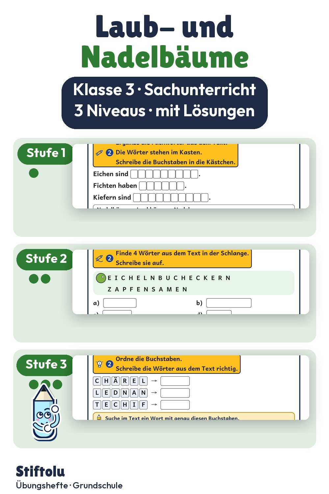

Werbung · Übungsheft von Stiftolu
Laubbaum oder Nadelbaum? Herbst-Sachtexte für Klasse 3

Wie unterscheiden sich Laubbäume und Nadelbäume? Genaues Lesen steht im Sachunterricht der dritten Klasse im Mittelpunkt: Fragen zum Text beantworten, Sätze prüfen, Informationen in Tabellen ordnen, Fachwörter erklären. Das alles gibt es auf drei Niveaus. Die 48 Seiten samt Lösungen und Handreichung sind erhältlich auf eduki im Shop Stiftolu.